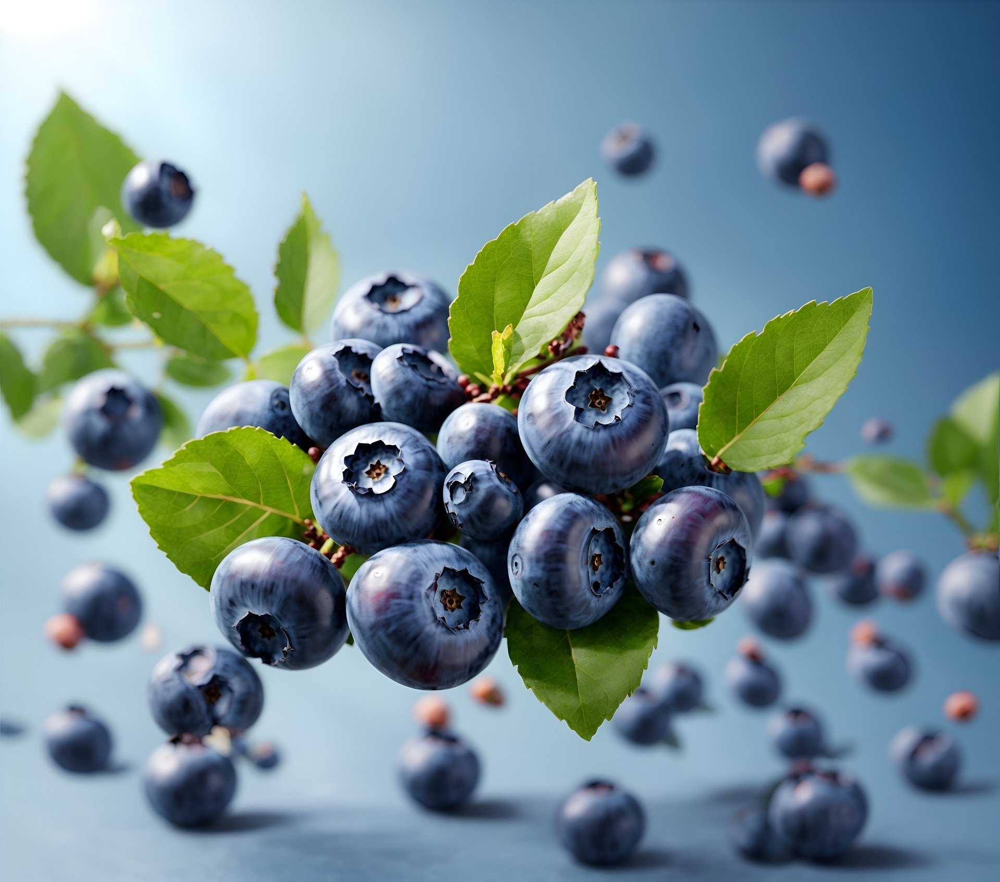
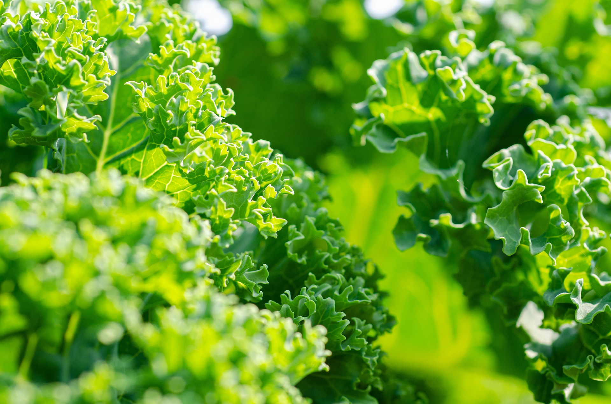
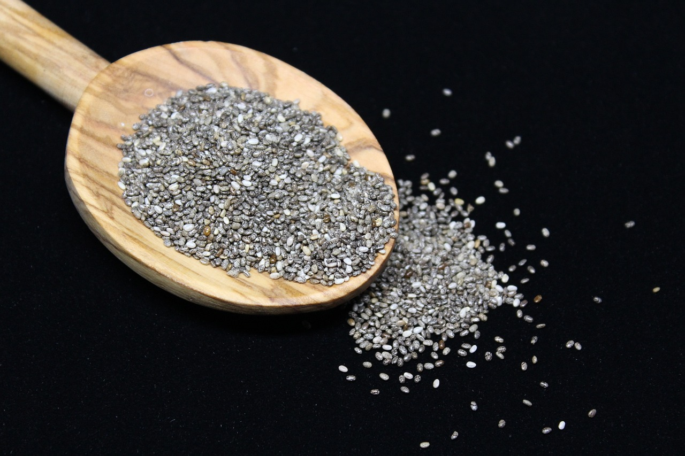

Introduction
Superfoods are nutrient-rich foods that offer numerous health benefits. Including them in your diet can help you meet your nutritional needs and enhance your overall well-being. Here are five superfoods that you should consider adding to your meals.
1. Blueberries
Blueberries are packed with antioxidants, vitamins, and fiber. They help fight inflammation, improve brain function, and reduce the risk of heart disease. Enjoy them fresh, in smoothies, or as a topping for yogurt and oatmeal.
2. Kale
Kale is a nutrient-dense leafy green that is rich in vitamins A, C, and K, as well as calcium and antioxidants. Add kale to salads, soups, and smoothies for a healthy boost.
3. Quinoa
Quinoa is a gluten-free grain that is high in protein, fiber, and essential amino acids. It is also rich in magnesium, iron, and antioxidants. Use quinoa as a base for salads, bowls, and side dishes.

4. Chia Seeds
Chia seeds are an excellent source of omega-3 fatty acids, fiber, and antioxidants. They help with digestion, weight loss, and heart health. Sprinkle chia seeds on yogurt, blend them into smoothies, or make chia pudding.
5. Salmon
Salmon is a fatty fish that is high in omega-3 fatty acids, protein, and essential vitamins and minerals. It supports heart health, brain function, and reduces inflammation. Enjoy salmon grilled, baked, or in salads.

Conclusion
Incorporating these superfoods into your diet can provide numerous health benefits and help you maintain a balanced and nutritious diet. Experiment with different recipes and enjoy the powerful effects of these nutrient-dense foods.